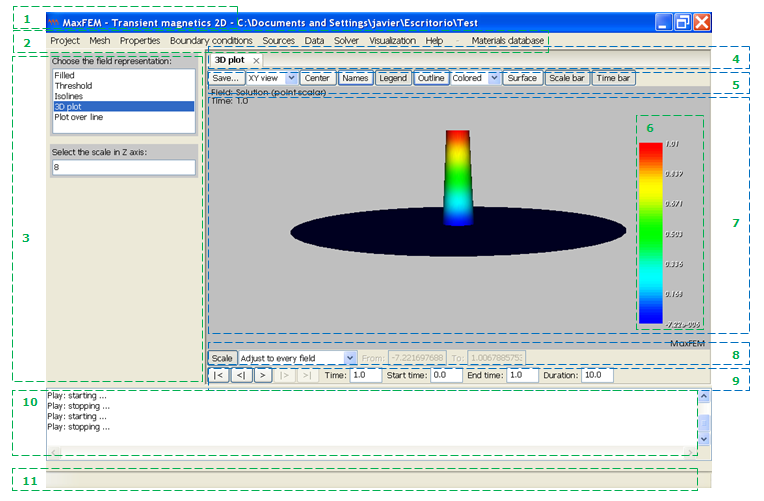
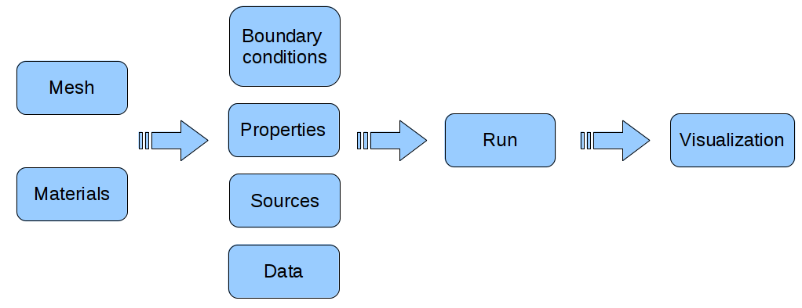

This section describes most of the components in the MaxFEM environment. Throughout this manual we will assume that the program has been installed in the folder INSTALLDIR.
In order to start working with the interface three steps must be performed:
Open the interface.
Choose a working directory.
Select an application.
The application can be executed either by clicking on a menu, clicking on an icon or by typing the name of the executable in the command line, depending on the chosen installation mode. In the latter case, the user runs the file INSTALLDIR/code/<name>.py, where name corresponds to the package. The graphical interface is then displayed; the first time that interface is open the menu bar consists of three dropdown menus: Project , Help and Materials database.
MaxFEM desktop is automatically configured taking into account:
The space dimension of the application (2D or 3D).
The physical application defined (magnetostatics, electrostatics, etc).
The context: Project, Mesh, Properties, etc.
MaxFEM graphical interface consists of several graphical components, such as:
Windows
Buttons
Menus
Text fields
The user interacts with the application by:
Clicking on a button to choose a program option.
Making a choice from a menu.
Entering text in a text field.
Dragging a scroll bar.
Clicking on a window's close button.
When expanding the folders in MaxFEM menu, icons and labels representing different actions are displayed. The graphical interface of MaxFem allows, trough reconfigurable menus, collecting data, performing calculations and displaying code results The general MaxFEM window consists of several zones, which have been sketched in the figure below.

| 1. Title bar | 2. Menu bar | 3. Data window | 4. Visualization bar |
| 5. Visualization menu | 6. Scale | 7. Visualization window | 8. Scale bar |
| 9. Time bar | 10. Message window | 11. Status bar |
Title bar: displays general information (software name, version number, selected application, project name and location).
Menu bar: access to the menus corresponding to the different contexts.
Data window: displays dialog boxes where the user can choose options and type or modify data.
Visualization bar: shows the current visualizations.
Visualization menu: holds buttons that perform actions on the visualization.
Scale: shows the scale range and colors.
Visualization window: shows the graphical results corresponding to the problem being modelled.
Scale bar: holds buttons that perform actions on the scale.
Time bar: holds buttons that perform actions on the time-dependent visualizations.
Message window: shows the output of the computational solvers.
Status bar: Information concerning different current action.
Before starting to work with a particular application, the user has to choose a working directory via the menu bar Project → Select Folder → Open. This folder will contain the files associated with the application. If the directory had already been used as a working directory for an application, the interface will automatically load the menu bar associated with that application, which had been saved in the file local.mnu.xml. However, the application can be changed on the menu Application at any moment.
The graphical interface allows working with one or more scientific applications. A scientific application is a software that needs certain input data and, after running one or more codes, produces some result files for post-processing or visualization.
Each application has a particular menu bar to request the input data, running the corresponding internal codes and displaying the results.
The submenu Project → Application allows the user to select one of the available applications, whose data will be first copied into the working directory and then loaded to show the specific menus bars. At this time, the available applications are:
Electrostatics 2D and 3D.
Direct current 2D and 3D.
Magnetostatics 2D.
Transient Magnetics 2D.
Eddy currents 2D, 3D and axisymmetrics.
Note that if the working directory has been previously associated with an application the files stored in the directory may be overwritten.
Selecting Sample Data brings up a menu with a list of some examples for the selected application. The user can modify the predefined input data in order to obtain different results. A blank template is included among these examples, called New.
The usual procedure in a numerical simulation begins with the definition of the data; then the numerical solver is executed and the results can be visualize (See Figure 1). All this actions are performed in MaxFEM through the menu items. The recommended visiting order of the MaxFEM menu items is their natural order of appearance.

Figure 1: Usual procedure in a MaxFEM simulation.